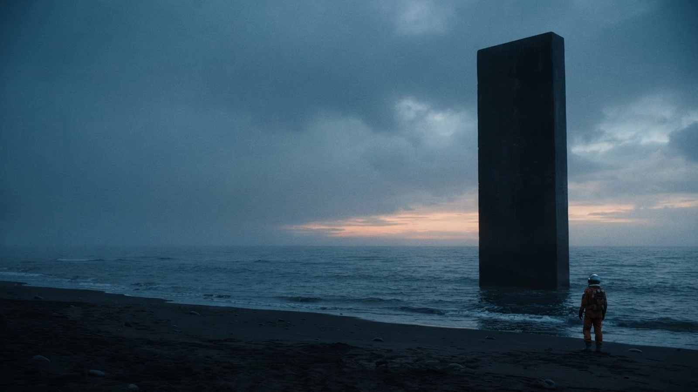

이번 주의 발견 VOL. 01
고요의 궤도
QUIET ORBIT
2026 SF·미스터리 15+ 1시간 48분
모든 소리가 사라진 해안, 정체를 알 수 없는 신호가 도착한다. 마지막 관측자는 그 고요 속으로 한 걸음 다가선다.
고요가 시작되는 곳, 이야기가 깨어난다. A CINEMO ORIGINAL CONCEPT
오늘, 새로운 세계로
낯선 풍경 속에서 시작되는 네 편의 이야기
밤이 깊어질 때
하루의 끝에 오래 남을, 조용하고 짙은 장면들